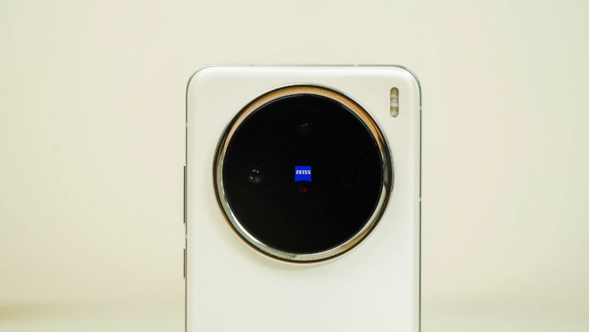
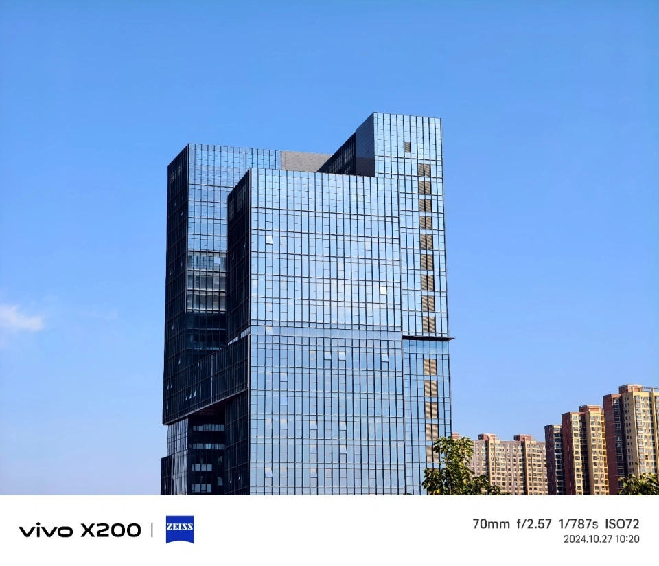
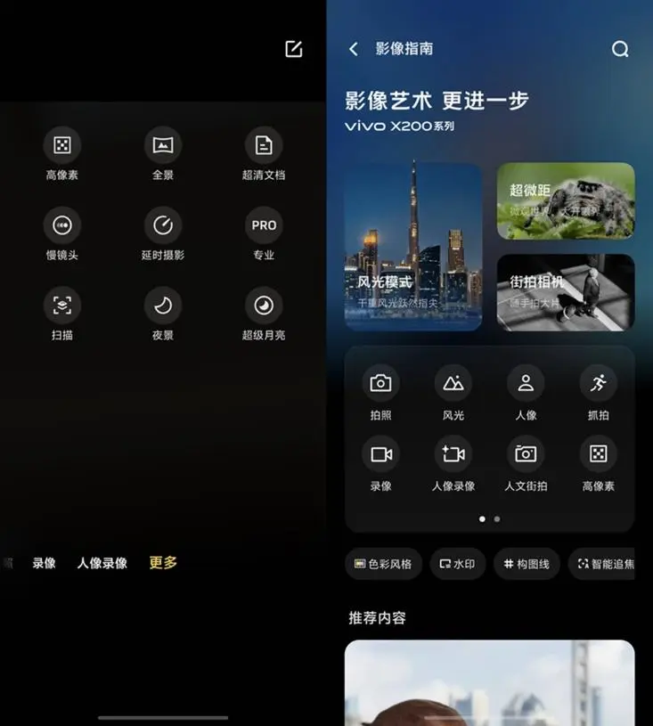
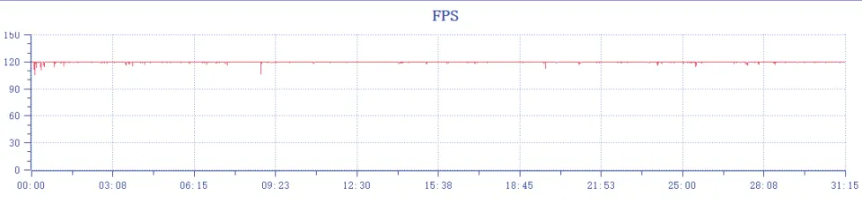
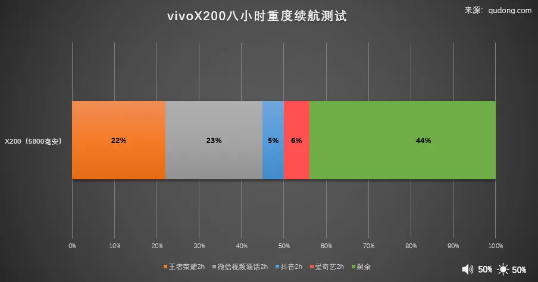
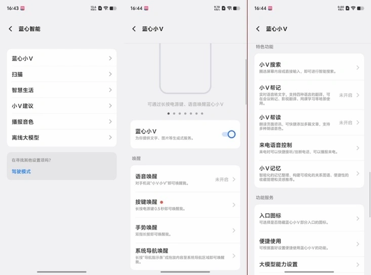
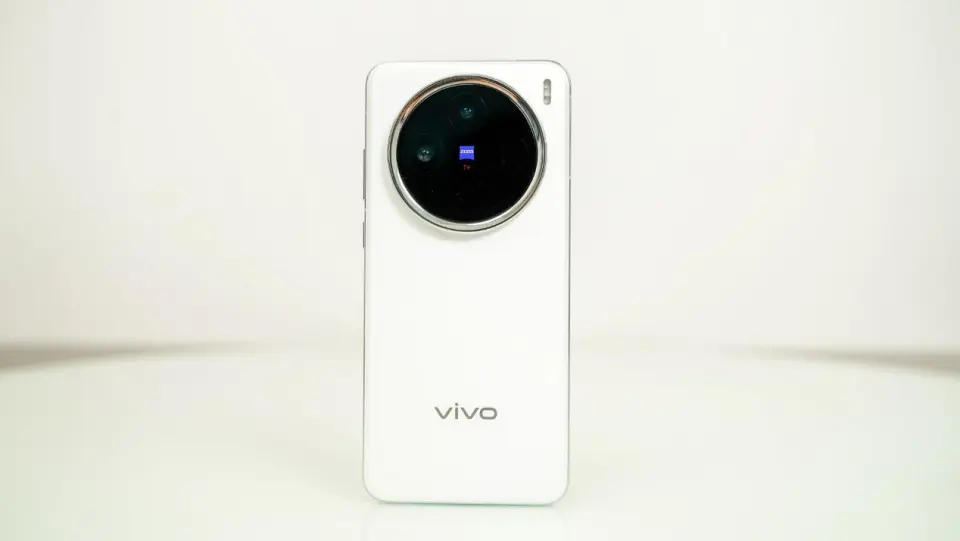

vivo X200系列深度测评
基于前几代积累的不错市场口碑，蓝厂今年的扛鼎之作vivo X200系列在发布前可谓是期待值拉满，尤其是在手机影像领域，蓝图影像更是不必多言，是消费者用销量选择的安卓手机影像巅峰。
vivo早些天带来了新一代旗舰手机 ——vivo X200。这款手机不仅继承了 vivo X 系列一贯的优雅设计和出色影像实力，还在性能、续航等多个方面实现了全面升级，为用户带来了更加均衡、出色的使用体验，堪称是中杯旗舰的标准答案。
性能堆料上，vivo X200 首发搭载了联发科最新的天玑 9400 旗舰芯片，配合 LPDDR5X 四通道运存和 UFS4.0 闪存，安兔兔跑分轻松突破 300 万分大关，为用户提供了前所未有的性能体验。
在影像方面，vivo X200 采用后置三摄组合，包括一颗 5000 万像素的 IMX921 主摄、一颗支持高达 100x 蔡司超清变焦的 IMX882 潜望长焦镜头以及一颗 5000 万像素的超广角镜头。实现了从广角到长焦的全焦段拍摄需求，让用户在不同场景下都能轻松拍摄出满意的照片和视频。此外，vivo X200 还支持全新的风光模式和 Live Photo 动态照片功能，进一步提升了 vivo X200 手机用户的拍摄体验和社交分享的便利性。
续航方面，vivo X200 也内置了一块 5800mAh 的大容量电池，充满电后可以实现长达 20.3 小时的连续长时间视频播放，满足用户一天的重度使用需求。同时，它还支持 90W 超快闪充，可实现快速回血，让用户在日常使用中无需担心电量问题。
外观设计上，vivo X200 同样下足了功夫。它采用了全等深微四曲屏设计，兼顾视觉和手感。机身背部采用了玻璃材质，进一步提升手机整体质感。
总的来说，vivo X200 是一款集科技与美学于一身的旗舰手机。它凭借强大的硬件配置、优雅的外观设计、出色的影像实力以及可靠的续航能力，成为了中杯旗舰的标准答案，也为用户带来了全新的使用体验。
影像小灭霸 依旧是消费者的心水影像旗舰
基于上一代vivo X100系列那套成熟的影像方案，今年的vivo X200虽然是基础款但依旧超越同档位旗舰的强大影像水准。后置三摄组合为5000万像素的IMX921主摄、蔡司超清变焦的IMX882潜望长焦镜头以及一颗JN1超广角镜头，实现了从广角到长焦的全焦段拍摄需求，让用户在不同场景下都能轻松拍摄出满意的照片和视频。

主要提升是长焦升级，1/2”、光圈f/2.57，支持3X光学变焦和最大100X蔡司超清变焦，对焦能力和感光性能都更好，可以轻松的直出风光大片，主玩的3X（70mm）和10X，色彩一致，画面纯净完全可用，实际体验上，长焦的使用场景和效果，大多数消费者都是远超主摄。0
可以看到，vivo X200 3倍直出的画面，都相当的清晰且色彩讨喜，细节处理上，画面过渡细腻连贯，能还原每一个色彩细节和光影关系，明暗细节都清晰，画面质感和立体感突出。

在拍摄体验上，vivoX200还进行了交互界面的整合，逻辑上更加合理，更容易上手，常用的模式提前到一级菜单，而不常用的整合，其中就包括夜景升级为风光模式，融合原夜景、月亮、星空、时光慢门等多个模式。

旗舰体验全面升级 更均衡的Pro级标准版
首先核心SOC，天玑调教看蓝厂，已经是近年大家公认的定律，整个体验期间，不打游戏的情况下，vivo X200调教下德天玑9400真的太稳太冷静了，无乱是多任务还是高温环境，9400的表现都称的上是新一代能效王者，这一点这对于大部分用户体验而言，提升巨大。
实测跑分，安兔兔280万分的成绩，相较于上一代提升明显。
游戏实测环节，我们选择了最高画质《王者荣耀》30分钟，稳稳的满帧120，整个过程都没有有明显的帧率波动，也没有因为发热而降频，整个游戏过程最高温度也就38℃左右。

续航方面，vivo X200提升明显，电池来到5800毫安，标准版旗舰电池容量前列，一天的深度使用，完全没问题。

实际续航测试，荣耀vivo X200两小时满帧高分辨率《王者荣耀》仅耗电量20%，微信视频通话两小时耗电21%，刷两小时抖音耗电2%，4K视频两小时耗电量3%。重度使用约8小时，最后电池仍有54%左右的电量，荣耀X60 Pro的续航能力完全能支撑一天的正常使用。
90线快充和W无线闪充也完全够用，30W无线充电10分钟充至 25%，无线充电10分钟即可充至 18%。
其他外围配置方面，vivo X200还支持IPX68 防水，全球首发公里级无网通信，以及定制的8T屏幕护眼屏，综合端高旗舰体验，超越标准版。
流畅稳定的OriginOS 5 全面进化的AI体验
全新的OriginOS 5系统延续了一贯的好评的基础流畅性和稳定性，相较于其他厂商，更加流畅稳定的系统，远比任何提升新功能和效率更为关键。在体验中，vivo X200一如既往的流畅操控，丝滑的动画效果、以及稳定的AI交互体验，值得点赞。
在流畅基础上，全新的OriginOS 5.0主要带来了全新的AI进化，原子岛效率拉满，不仅可以简单的进行信息提示，还可以主动提供AI服务建议。
更智能高效的是一键流转交互，例如复制地址后提供快速跳转地图服务，拖拽图片至原子岛时呈现如“发送给微信朋友”等流转分享服务。

vivo的智能助手蓝心小V也得到了升级，唤醒方式更多，不限场景，而且支持语音、打字输入，还可以与AI进行深度对话。同时，蓝心小V还加入了一系列智能体，比如写作神器、阅读助手等，丰富了不同场景下的体验。
小V圈搜”，可以长按导航条触发屏幕扫描，然后随便圈画屏幕中的内容就可以进行识别分析，真正做到了“哪里好奇圈哪里”。
全等深微四曲 标准版手感最佳
在体验一段时间之后，vivo X200带给我最大的感受就是，绝佳的手感，7.99mm轻薄机身配合全等深微四曲屏，vivo X200的极致手感，可以说是X200系列中最好的一部，即兼顾了直屏的观感，而微曲过渡连贯又兼顾了手感。

手持的白色版本格外的温润，配合亮面银色铝合金中框，光洁感大大提升，机身整体感浑然天成，正如官方命名的白月光一样，纯洁通透的AG磨砂玻璃后盖就和白色钢琴键一样，高端质感和绝佳触感双收。